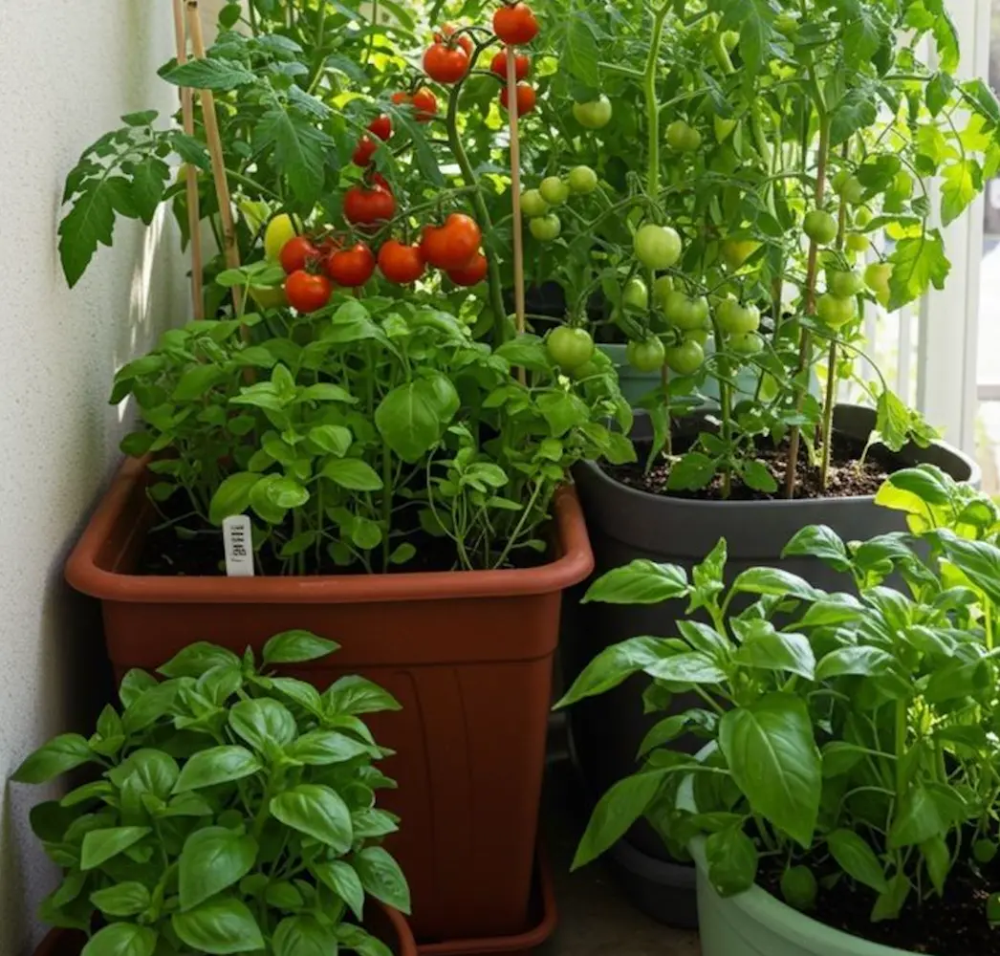
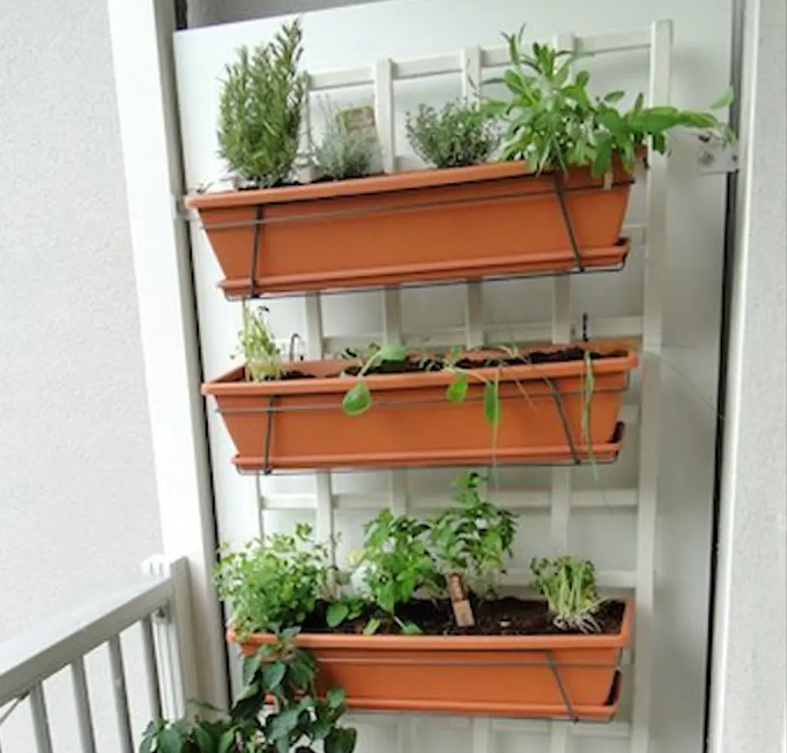

Mit Layout
En altan er måske ikke det første sted, man tænker på, når man vil dyrke egne grøntsager og krydderurter men faktisk er der mange kreative og praktiske måder, man kan designe et funktionelt layout på, selv med begrænset plads.
Et godt layout handler om at udnytte de kvadratmeter, man har, så smart som muligt. Tænk i højden, brug kroge, stativer og vægge, og vælg planter, der passer til de lysforhold, din altan har.
 Her er der eksempler på andre, der har brugt hegnet eller altanens sider til at hænge krukker og spirer op. Ved at gøre dette kommer planterne op i sollys, optager ikke gulvplads, og nogle af dem kan endda få regnvand naturligt. Større planter som tomater, squash eller chili kan stå i store krukker i hjørnerne, hvor de ikke er i vejen.
Gode råd:
- Brug væggen eller altanens hegn
- Placer større krukker i hjørnet
- Skab niveauer
- Vælg plantekasser med hjul
- Tænk på solens retning
- Hold haveudstyr tæt på